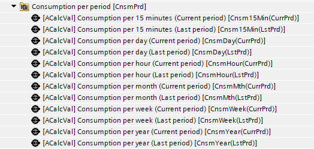
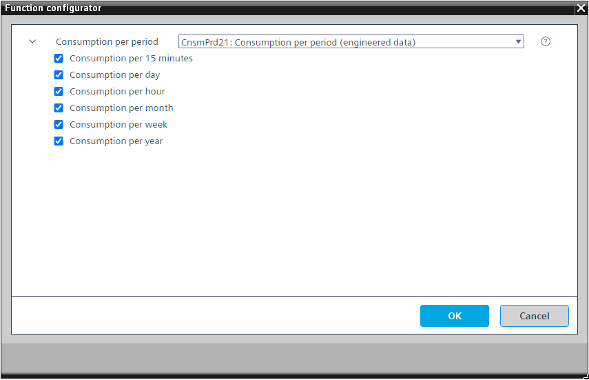

[CnsmPrd21]每期消耗量
Program block, name / node subtype: [CnsmPrd21] Consumption per period
Library hierarchy: Universal functions
Family: CnsmPrd
项目树 | 图表 |
|---|---|
|
 |
|

Configurator


程序块存储在没有 I/Os. 的库中 使用auto-create and auto-connect函数创建 I/Os 和 /or 将它们连接到接口块，例如 R_A、CMD_B。或者，从包含库中预定义 I/Os 的文件夹中取出 I/Os，并从工厂中取出 /or，并将它们连接到接口块。
CnsmPrd21 读取累加器对象的截断当前值（属性 ID 4432），并计算自周期开始以来的当前消耗与上一个周期保存的消耗之间的差。在当前周期结束时，CnsmPrd21 会将其保存并显示为上一周期的消耗量。
当前周期和上一个周期的电流消耗值将永久保存。
CnsmPrd21 可以用作电能表，因为它从累加器对象读取值并将其显示为带有模拟计算值的实际值。
一个时期不是一个“移动”的时期。周期是从日期和时间派生的静态周期：
例如，一小时的时间段是在 06:00 和 07:00 之间。
一日时间为 00:00 至 24:00。
15 分钟的时间段是 06:00 至 06:15 之间，然后是 06:15 至 06:30 之间，依此类推。
该程序块具有以下可选功能：
Option: Consumption per 15 minutes
它计算自该期间开始以来的当前消耗量与上一期间的保存消耗量之间的差值。在当前周期结束时，它会将其保存并显示为上一周期（最后 15 分钟）的消耗量。
Option: Consumption per hour
它计算自该期间开始以来的当前消耗量与上一期间的保存消耗量之间的差值。在当前周期结束时，它会将其保存并将其显示为上一个周期（最后一小时）的消耗量。
Option: Consumption per day
它计算自该期间开始以来的当前消耗量与上一期间的保存消耗量之间的差值。在当前期间结束时，它会将其保存并显示为上一期间（最后一天）的消耗量。
Option: Consumption per week
它计算自该期间开始以来的当前消耗量与上一期间的保存消耗量之间的差值。在当前期间结束时，它会将其保存并将其显示为上一个期间（上周）的消耗量。
Option: Consumption per month
它计算自该期间开始以来的当前消耗量与上一期间的保存消耗量之间的差值。在当前期间结束时，它会将其保存并显示为上一期间（上个月）的消耗量。
Option: Consumption per year
它计算自该期间开始以来的当前消耗量与上一期间的保存消耗量之间的差值。在当前期间结束时，它会将其保存并显示为上一期间（去年）的消耗量。
描述 |
|---|
|
Consumption per year 属于该选项的元素： Consumption per year (Present period) | ACalcVal: Analog calculated value|趋势类型：3 Consumption per year (Last period) | ACalcVal: Analog calculated value|趋势类型：4 |
Consumption per month 属于该选项的元素： Consumption per month (Present period) | ACalcVal: Analog calculated value|趋势类型：3 Consumption per month (Last period) | ACalcVal: Analog calculated value|趋势类型：4 |
Consumption per week 属于该选项的元素： Consumption per week (Present period) | ACalcVal: Analog calculated value|趋势类型：3 Consumption per week (Last period) | ACalcVal: Analog calculated value|趋势类型：4 |
Consumption per day 属于该选项的元素： Consumption per day (Present period) | ACalcVal: Analog calculated value|趋势类型：3 Consumption per day (Last period) | ACalcVal: Analog calculated value|趋势类型：4 |
Consumption per hour 属于该选项的元素： Consumption per hour (Present period) | ACalcVal: Analog calculated value|趋势类型：3 Consumption per hour (Last period) | ACalcVal: Analog calculated value|趋势类型：4 |
Consumption per 15 minutes 属于该选项的元素： Consumption per 15 minutes (Present period) | ACalcVal: Analog calculated value|趋势类型：3 Consumption per 15 minutes (Last period) | ACalcVal: Analog calculated value|趋势类型：4 |
当前期间和上一期间的计算消耗量将永久存储。
CnsmPrd21 也可以用在仪表的设备图表中。